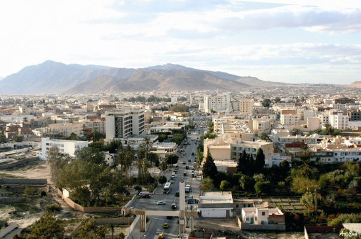

Bienvenue à Gafsa
Gafsa est une ville du sud-ouest de la Tunisie et le chef-lieu du gouvernorat du même nom. Située à 369 kilomètres de Tunis, elle est considérée comme la porte du Sahara tunisien. Son histoire remonte à la préhistoire et elle a connu plusieurs civilisations qui ont laissé leurs empreintes dans la région.
